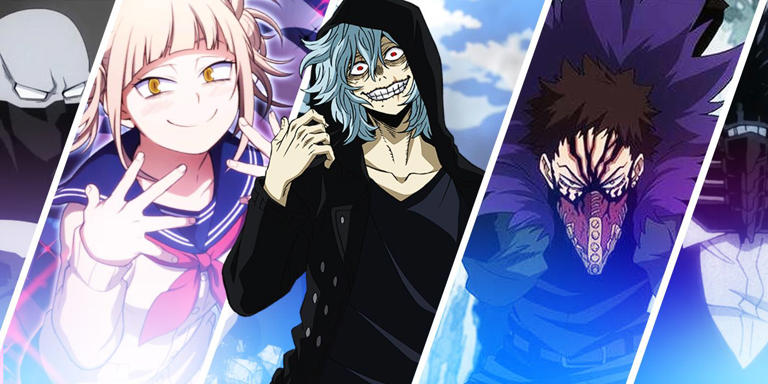

My Hero Academia Villains
Overview:
The League of Villains
The League of Villains, led by the menacing Tomura Shigaraki, is the central threat to hero society. Initially a disorganized group, they evolve into a powerful force that shakes the very foundations of the world. Their ultimate goal? To tear down the existing hero system and rebuild society in their image.

All for One
The ultimate puppet master and the archenemy of All Might, All for One is the mastermind behind much of the chaos in hero society. With centuries of experience and an unmatched arsenal of Quirks, he is the embodiment of villainy.

The Threat to Hero Society
The villains of My Hero Academia aren’t just enemies to be defeated—they challenge the very ideals of heroism and force both heroes and society to evolve. As the stakes rise, the line between good and evil blurs, leaving fans to question: Who truly decides what it means to be a hero or a villain?
